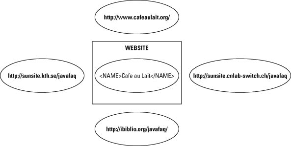

In This Chapter
XLinks versus HTML Links
Linking elements
Descriptions of the remote resource
Link behavior
Extended links
Extended link syntax
Arcs
Out-of-line links
XML Base
Hypertext in XML is divided into multiple parts: XLink, XML Base, XPointer, and XInclude. XLink, the XML Linking Language, defines how one document links to another document. XML Base defines how the base URL of a document (against which relative URLs are resolved) is set. XPointer, the XML Pointer Language, defines how individual parts of a document are addressed. XInclude defines how one document can be built out of different pieces of other documents.
An XLink points to a URI (in practice, a URL) that specifies a particular resource. If this URI is relative, the base URI can be established by an xml:base attribute. Relative or not, this URI may have a fragment identifier that more specifically identifies the desired part of the targeted document. When the URI points to an XML document, the fragment identifier is an XPointer. This chapter explores XLink and XML Base. The next two chapters explore XPointer and XInclude.
The Web conquered the more established Ggopher protocol for one main reason: HTML made it possible to embed hypertext links in documents. These links could insert images or let the user jump from inside one document to another document or another part of the same document. To the extent that XML is rendered into HTML for viewing, the same syntax that HTML uses for linking can be used in XML documents. Alternate syntaxes can be converted into HTML syntax using XSLT.
Cross-Reference
XSLT, including several examples of converting XML markup to HTML links, is discussed in Chapter 15.
However, HTML linking has limits. For one thing, URLs are limited to pointing at a single document. More granularity than that, such as linking to the third sentence of the seventeenth paragraph in a document, requires you to manually insert named anchors in the targeted document. It can’t be done without write access to the document to which you’re linking.
Furthermore, HTML links don’t maintain any sense of history or relations between documents. Although browsers may track the path you’ve followed through a series of documents, such tracking isn’t very reliable. From inside the HTML, there’s no way to know from where a reader came. Links are purely one-way. The linking document knows to whom it’s linking, but the linked document does not know who’s linking to it.
XLink supports more powerful links between documents designed especially for use with XML. XLink achieves everything possible with HTML’s URL-based hyperlinks and anchors. Beyond this, however, it supports multidirectional links (where the links run in more than one direction). Any element can become a link, not just the A element. Links do not even have to be stored in the same file as the documents they connect. These features make XLinks more suitable not only for new uses, but for things that can be done only with considerable effort in HTML, such as cross-references, footnotes, end notes, and more.
Caution
Only Mozilla and its derivatives (Netscape 6, Netscape 7, Galeon, Camino, Firebird, and so on) have any support for XLinks, and that support is incomplete. Internet Explorer 6.0, Opera 7.0, and Safari 1.0 and earlier have absolutely no support for any kind of XLink. There are no general-purpose applications that support arbitrary XLinks. That’s because XLinks have a much broader base of applicability than HTML links. XLinks are not just used for hypertext connections and embedding images in documents. They can be used by any custom application that needs to establish connections between documents and parts of documents, for any reason. Even when XLinks are fully implemented in browsers, they may not always be blue underlined text that you click to jump to another page. They can be that, but they can also be both more and less, depending on your needs.
In HTML, a link is defined with the <A> tag. However, just as XML is more flexible with elements, it is more flexible with links. In XML, any element can be a link or part of a link. XLink elements are identified by an xlink:type attribute with one of these seven values:
simple
extended
locator
arc
resource
title
none
The xlink prefix must be bound to the http://www.w3.org/1999/xlink namespace URI. As usual, the prefix can change as long as the URI remains the same. The xlink prefix is customary, and should be used unless you’ve got a really good reason to change it. In this chapter, I assume that the prefix xlink has been bound to the http://www.w3.org/1999/xlink URI.
XLinks elements whose xlink:type attribute has the value simple or extended are called linking elements. For example, these are three linking elements:
<COMPOSER xmlns:xlink="http://www.w3.org/1999/xlink"
xlink:type="simple"
xlink:href="http://users.rcn.com/beand/">
Beth Anderson
</COMPOSER>
<FOOTNOTE xmlns:xlink="http://www.w3.org/1999/xlink"
xlink:type="simple"
xlink:href="footnote7.xml">7</FOOTNOTE>
<IMAGE xmlns:xlink="http://www.w3.org/1999/xlink"
xlink:type="simple" xlink:href="logo.gif"
xlink:actuate="onLoad" xlink:show="embed"/>
Notice that the elements have semantic names that describe the content they contain rather than how the elements behave. The information that these elements are links is included in the attributes, not the element names. Attributes define the linking behavior.
These three examples are simple XLinks. Simple XLinks are similar to standard HTML links, and are the only kind of link supported by today’s web browsers, so I’ll begin with them. Later, I talk about the more complex (and more powerful) extended links.
In the preceding COMPOSER example, the xlink:href attribute defines the target of the link. The value of this attribute is the absolute URL http://users.rcn.com/beand/. This linking element describes a connection from the COMPOSER element in the current document with the content ""Beth Anderson"" to the remote document at http://users.rcn.com/beand/. If you were to include this element in an XML document and load that document into an XLink-aware web browser, such as Mozilla or Netscape 6, the user could click on it to jump to the page http://users.rcn.com/beand/.
The browser does not necessarily indicate this to the user by underlining it and coloring it blue, however. Visual formatting is still the province of a style sheet. Web documents that use XLinks will normally need CSS rules that use the :link and :visited pseudo-classes to specify how links are formatted. For example, these two rules attempt to duplicate traditional link formatting:.
*:link {color: blue; text-decoration: underline}
*:visited {color: purple; text-decoration: underline}
You’re, of course, free to choose other styles, though doing so might cause readers to miss your links. It’s best not to change the link colors.
You can also interpret this simple link more abstractly, as simply defining a one-way connection from one resource, the COMPOSER element, to another resource, the web page at http://users.rcn.com/beand/. Figure 17-1 diagrams this connection. This connection does not really imply any particular semantics or behavior. It’s up to the application reading the document to decide what this abstract link means to it.
Figure 17-1: A link from the COMPOSER element to http://users.rcn.com/beand/
In the FOOTNOTE example, the link target attribute’s name is xlink:href. Its value is the relative URL footnote7.xml. This describes a connection from the FOOTNOTE element in the current document with the content ""7"" to the document named footnote7.xml on the same server in the same directory as the document in which this link appears.
In the third example above, the value of the xlink:href attribute is the relative URL logo.gif. The scheme, host, and directory of the document are copied from the scheme, host, and directory of the document in which the link appears. However, this element requests slightly different behavior. Instead of waiting for the user to activate the link, the xlink:actuate attribute asks that the link be activated automatically as soon as the document is loaded. The xlink:show attribute requests that the result be embedded in the current document instead of replacing the current document.
If the document has a document type definition (DTD), these attributes should be declared like any other. For example, declarations of the FOOTNOTE, COMPOSER, and IMAGE elements might look like this:
<!ELEMENT FOOTNOTE (#PCDATA)>
<!ATTLIST FOOTNOTE
xmlns:xlink CDATA #FIXED "http://www.w3.org/1999/xlink"
xlink:type CDATA #FIXED "simple"
xlink:href CDATA #REQUIRED
>
<!ELEMENT COMPOSER (#PCDATA)>
<!ATTLIST COMPOSER
xmlns:xlink CDATA #FIXED "http://www.w3.org/1999/xlink"
xlink:type CDATA #FIXED "simple"
xlink:href CDATA #REQUIRED
>
<!ELEMENT IMAGE EMPTY>
<!ATTLIST IMAGE
xmlns:xlink CDATA #FIXED "http://www.w3.org/1999/xlink"
xlink:type CDATA #FIXED "simple"
xlink:href CDATA #REQUIRED
xlink:show CDATA #FIXED "onLoad"
xlink:actuate CDATA #FIXED "embed"
>
With these declarations, the xlink:type, xmlns:xlink, xlink:show, and xlink:actuate attributes have fixed values. Therefore, they do not need to be included in the instances of the elements, which you may now write more compactly, like this:
<FOOTNOTE xlink:href="footnote7.xml">7</FOOTNOTE> <COMPOSER xlink:href="http://users.rcn.com/beand/"> Beth Anderson </COMPOSER> <IMAGE xlink:href="logo.gif"/>
Making an element a link doesn’t impose any restriction on other attributes or contents of the element. An XLink element may contain arbitrary children or other attributes. For example, a more realistic IMAGE element would look like this:
<IMAGE ALT="Cafe con Leche Logo of a coffee cup"
WIDTH="89" HEIGHT="67"
xmlns:xlink="http://www.w3.org/1999/xlink"
xlink:type="simple" xlink:href="logo.gif"
xlink:actuate="onLoad" xlink:show="embed"/>
Half of the attributes don’t have anything to do with linking. The declaration in the DTD would then look like this:
<!ELEMENT IMAGE EMPTY>
<!ATTLIST IMAGE
xmlns:xlink CDATA #FIXED "http://www.w3.org/1999/xlink"
xlink:type CDATA #FIXED "simple"
xlink:href CDATA #REQUIRED
xlink:show CDATA #FIXED "onLoad"
xlink:actuate CDATA #FIXED "embed"
ALT CDATA #REQUIRED
ALIGN CDATA #IMPLIED
HEIGHT CDATA #REQUIRED
WIDTH CDATA #REQUIRED
>
In fact, a linking element might even have children that are themselves linking elements! That is, a linking element may contain another linking element or elements. This doesn’t have any special meaning. As far as links go, each linking element is treated in isolation.
A linking element can have optional xlink:role and xlink:title attributes that describe the remote resource; that is, the document or other resource to which the link points. The title contains plain text that describes the resource. The role contains an absolute URI pointing to a document that more fully describes the resource. For example, the title might describe what a page does, and the role might point to a help page for the page:
<SEARCH xlink:type="simple"
xlink:href="http://www.google.com/advanced_search"
xlink:title="Search with Google"
xlink:role="http://www.google.com/help.html">
Search the Web with Google
</SEARCH>
Both the role and title describe the remote resource, not the local element. The remote resource in the preceding example is the document at http://www.google.com/advanced_search. It’s not uncommon, though it’s not required, for the valuer of the xlink:title attribute to be the same as the contents of the TITLE element of the page to which you are linking.
Another possibility is to have the role point to some form of identifier URL for the format of the data found at the xlink:href. This may be a MIME media type, a namespace URI, or the location of a prose specification, DTD, schema, or style sheet. For example, to indicate that the search page is written in HTML you might set the role to the URL of the HTML 4.0 specification:
<SEARCH xlink:type="simple"
xlink:href="http://www.google.com/advanced_search"
xlink:title="Search with Google"
xlink:role="http://www.w3.org/TR/html4/">
Search the Web with Google
</SEARCH>
Alternately, you could use the URL for the HTML MIME media type, http://www.isi.edu/in-notes/iana/assignments/media-types/text/html, the URL for the XHTML namespace, http://www.w3.org/1999/xhtml, or the URL for the HTML 3.2 DTD, http://www.w3.org/TR/REC-html32#dtd. You could even use a mailto URL giving the e-mail address of the person who wrote the page. Other values are possible. XLink does not define any rules for how applications should interpret the value of an xlink:role, beyond simply stating that it must be an absolute URI.
XLink does not define the user interface by which link roles and titles are presented to users. For example, Mozilla shows the user the title of the link in a Ttool Ttip when the cursor is hovering over the link, and does nothing with the role. A different application might choose to put the title in the status bar of the browser window, or do both, or neither. How or whether any particular application makes use of the role and title is completely up to it.
As with all other attributes, the xlink:title and xlink:role attributes should be declared in the DTD for all the elements to which they belong. For example, this is a reasonable declaration for the preceding SEARCH element:
<!ELEMENT SEARCH (#PCDATA)>
<!ATTLIST SEARCH
xmlns:xlink CDATA #FIXED "http://www.w3.org/1999/xlink"
xlink:type CDATA #FIXED "simple"
xlink:href CDATA #REQUIRED
xlink:title CDATA #IMPLIED
xlink:role CDATA #IMPLIED
>
Linking elements can contain two more optional attributes that suggest to applications how the link behaves when activated. These are as follows:
- xlink:show
- xlink:actuate
The xlink:show attribute suggests how the content should be displayed when the link is activated;, for example, by opening a new window to hold the remote resource or by loading the remote resource into the current window. The xlink:actuate attribute suggests when the link should be activated; for instance, as soon as the document is loaded, or only after a specific user request. Behavior is application- dependent, however, and applications are free to ignore the suggestions.
The xlink:show attribute
The xlink:show attribute has five possible values:
If the value of xlink:show is replace, then when the link is activated (generally by clicking on it, at least in GUI browsers), the target of the link replaces the current document in the same window. This is the default behavior of HTML links, as in this example:
<COMPOSER xlink:type="simple"
xlink:show="replace"
xlink:href="http://users.rcn.com/beand/">
Beth Anderson
</COMPOSER>
If the value of xlink:show is new, activating the link opens a new window in which the targeted resource is displayed. This is similar to the behavior of HTML links when the target attribute is set to _blank, as in the following example:
<WEBSITE xlink:type="simple"
xlink:show="new"
xlink:href="http://www.quackwatch.com/">
Check this out, but don't leave our site completely!
</WEBSITE>
If the value of xlink:show is embed, activating the link inserts the targeted resource into the existing document. Exactly what this means is application- dependent. Mostly, it implies that the application should somehow render the linked content and display it as part of the finished document. This is how the IMG, APPLET, and OBJECT elements behave in HTML. For example, an element like this one might be used to indicate that a JPEG image should be embedded in the document:
<PHOTO xlink:type="simple"
xlink:href="images/nypride.jpg"
xlink:show="embed"
ALT="Marchers on 5th Avenue, June 2004"/>
If the value of xlink:show is other, the application is supposed to look for other markup in the document that explains what to do. Generally, this would be used when a particular XML application used different, non-XLink elements or attributes to describe the link behavior. For example, many web pages have a LINK element in their header that references a style sheet and looks similar to this:
<LINK REL="stylesheet" TYPE="text/css"
HREF="http://www.w3.org/StyleSheets/TR/W3C-WD.css" />
This is a link, but what’s at the end of the link does not replace the existing document; it does not embed itself into the existing document; it is not displayed in a new window. In XML documents, you might agree that this behavior was implied whenever a STYLESHEET element was encountered. Because this is not one of the three predetermined link behaviors, you’d set xlink:show to other.
<STYLESHEET xlink:show="other"
xlink:href="http://www.w3.org/StyleSheets/TR/W3C-WD.css" />
Finally, you can set xlink:show to none to indicate that the document contains no information to help the application decide what, if anything, to do with the link. It’s completely up to the application reading the document to make its own choices.
Regardless of what behavior xlink:show suggests, the browser or other application reading the document is free to do whatever it wants when the link is activated, including nothing at all. For example, a browser with ""Automatically load images"" turned off might well choose to ignore xlink:show="embed".
Like all attributes in valid documents, the xlink:show attribute must be declared in a <!ATTLIST> declaration for the linking element, as in the following example:
<!ELEMENT WEBSITE (#PCDATA)>
<!ATTLIST WEBSITE
xmlns:xlink CDATA #FIXED "http://www.w3.org/1999/xlink"
xlink:type CDATA #FIXED "simple"
xlink:href CDATA #REQUIRED
xlink:show (new | replace | embed) #IMPLIED "replace"
>
This particular DTD fragment doesn’t allow the xlink:show attribute to have the value other or none. That’s OK, too. Not all linking elements necessarily support all possible values of xlink:show.
The xlink:actuate attribute
A linking element's xlink:actuate attribute has four possible values:
The value onRequest specifies that the link should be traversed only when and if the user requests it. This is the behavior of a normal HTML link. For example, this link jumps to the Powell’s bookstore@@@AU: Just Powell’s bookstore? no "the"@@@ when the user specifically requests that action:
<PURCHASE xlink:type="simple" xlink:actuate="onRequest"
xlink:href="http://www.powells.com/">
Buy from Powell's
</PURCHASE>
On the other hand, if the linking element’s xlink:actuate attribute is set to onLoad, the link is traversed as soon as the document containing the link is loaded. For example, you might set the actuate attribute to onLoad for an image or other piece of external content that’s to be embedded in the linking document. This way, the user doesn’t have to click the link to follow it. The code might look like this:
<IMAGE xlink:type="simple" xlink:href="logo.gif"
xlink:actuate="onLoad" xlink:show="embed"/>
If the linking element’s xlink:actuate attribute value is other, the application should look at other markup, not defined by XLink, to decide when to traverse the link. For instance, a browser might define a PRELOAD element as indicating that a document or image is not used on this page, but will likely soon be used. For example,
<PRELOAD xlink:type="simple" xlink:href="logo.gif"
xlink:actuate="other" xlink:show="none"/>
Therefore, if the browser has extra bandwidth available while the user is reading the page, it should load the document and cache it. Otherwise, it waits until the user actually actuates the link. Applications that don’t recognize the PRELOAD element would simply ignore it. (I should warn you that this is a purely hypothetical example that is not yet and probably never will be implemented by any actual browser.)
Finally, setting xlink:actuate to none leaves it completely up to the application to decide when or if to traverse the link.
Like all attributes in valid documents, the xlink:actuate attribute must be declared in the DTD in an <!ATTLIST> declaration for the linking elements in which it appears, as in the following example:
<!ELEMENT IMAGE EMPTY>
<!ATTLIST IMAGE
xmlns:xlink CDATA #FIXED "http://www.w3.org/1999/xlink"
xlink:type CDATA #FIXED "simple"
xlink:href CDATA #REQUIRED
xlink:show (new | replace | embed) #IMPLIED "embed"
xlink:actuate (onLoad) #FIXED "onLoad"
>
This particular DTD fragment doesn’t allow the xlink:actuate attribute to have the values onRequest, other, or none. That’s OK, too. Not all linking elements necessarily support all possible values of xlink:actuate.
A Shortcut for the DTD
Because the attribute names and types are standardized, it’s often convenient to make the attribute declarations a parameter entity reference and simply repeat that in the declaration of each linking element if there is more than one linking element in a document. For example:
<!ENTITY % link-attributes
"xlink:type CDATA #FIXED 'simple'
xlink:role CDATA #IMPLIED
xlink:title CDATA #IMPLIED
xmlns:xlink CDATA #FIXED 'http://www.w3.org/1999/xlink'
xlink:href CDATA #REQUIRED
xlink:show (new|replace|embed|other|none) #IMPLIED 'replace'
xlink:actuate (onRequest|onLoad|other|none) #IMPLIED 'onRequest'
"
>
<!ELEMENT COMPOSER (#PCDATA)>
<!ATTLIST COMPOSER
%link-attributes;
>
<!ELEMENT AUTHOR (#PCDATA)>
<!ATTLIST AUTHOR
%link-attributes;
>
<!ELEMENT WEBSITE (#PCDATA)>
<!ATTLIST WEBSITE
%link-attributes;
>
Simple links behave more or less like the old-fashioned links you’re accustomed to from HTML. A simple link connects one element in the linking document to one target document. Furthermore, the link is one-way, from the source to the target.
Extended links, however, go substantially beyond HTML links to include multidirectional links between many documents and out-of-line links. An extended link consists of a set of resources and a set of the connections between them. The resources may be local (part of the extended link element) or remote (not part of the extended link element, and generally, though not necessarily, in another document). Each resource may be either a target or a source of a link or both. If a link does not contain any local resources, only remote resources, it’s called an out-of-line link.
In computer science terms, an extended link is a directed, labeled graph in which the resources are vertices and the links between resources are edges. Thought of abstractly like this, an extended link is really just an XML format for a directed graph. The tricky part comes in deciding exactly what any particular application is supposed to do with such a data structure. For now, I can only speculate about what applications might do with extended links and what sort of user interfaces they might provide.
An extended link is represented in an XML document as an element of some arbitrary type, such as COMPOSER or TEAM, that has an xlink:type attribute with the value extended. As usual, the xlink prefix is associated with the http://www.w3.org/1999/xlink namespace URI. For example:,
<WEBSITE xmlns:xlink="http://www.w3.org/1999/xlink"
xlink:type="extended">
...
</WEBSITE>
Extended links generally point to more than one target and from more than one source. Both sources and targets are called by the more generic name resource. In fact, whether a resource is a source or a target can change depending on which link is being followed and in which direction.
Resources are divided into remote resources and local resources. A local resource is actually contained inside the extended link element. It is the content of an element of arbitrary type that has an xlink:type attribute with the value resource.
A remote resource exists outside the extended link element, very possibly in another document. The extended link element contains locator child elements that point to the remote resource. These are elements with any name that have an xlink:type attribute with the value locator. Each locator element has an xlink:href attribute whose value is a URI locating the remote resource.
Caution
The terminology is unnecessarily confusing here. Both xlink:type="locator" and xlink:type="resource" elements locate resources. An xlink:type="locator" element locates a remote resource. An xlink:type="resource" element locates a local resource. Personally, I think xlink:type="local" and xlink:type="remote" would be better choices here; but xlink:type="resource" and xlink:type="locator" are what the standard has given us.
For example, suppose you’re writing a page of links to Java sites. One of the sites you want to link to is Cafe au Lait at http://www.cafeaulait.org/. However, there are also three mirrors of that site in three other countries. Some people coming to the site will want to access the home site, while others will want to go to one of the mirror sites. With HTML links or simple XLinks, you have to write four different links, one for the home site and one for each mirror, and let the user pick. However, with an extended XLink, you can provide one link that connects all four sites, as well as the page you’re linking from. The browser can choose the one closest to the user when the link is activated (though I feel compelled to reiterate here that browser support for this is strictly hypothetical). The four remote sites are identified by locator elements. The text that will be shown to the reader of the page is identified by a resource element. Here’s the XML:
<WEBSITE xmlns:xlink="http://www.w3.org/1999/xlink"
xlink:type="extended">
<NAME xlink:type="resource">Cafe au Lait</NAME>
<HOMESITE xlink:type="locator"
xlink:href="http://www.cafeaulait.org/"/>
<MIRROR xlink:type="locator"
xlink:href="http://sunsite.kth.se/javafaq"/>
<MIRROR xlink:type="locator"
xlink:href="http://ibiblio.org/javafaq/"/>
<MIRROR xlink:type="locator"
xlink:href="http://sunsite.cnlab-switch.ch/javafaq"/>
</WEBSITE>
This WEBSITE element describes an extended link with five resources:
The NAME element containing the text Cafe au Lait, a local resource
The document at http://www.cafeaulait.org/, a remote resource
The document at http://sunsite.kth.se/javafaq, a remote resource
The document at http://ibiblio.org/javafaq/, a remote resource
The document at http://sunsite.cnlab-switch.ch/javafaq, a remote resource
Figure 17-2 shows the WEBSITE extended link element and five resources. The WEBSITE element contains one resource and refers to the other four by URLs. However, this just describes these resources. No connections are implied between them.

Figure 17-2: An extended link with one local and four remote resources
Both the extended link element itself and the individual locator children may have descriptive attributes, such as xlink:role and xlink:title. The xlink:role and xlink:title attributes of the extended link element provide default roles and titles for each of the individual locator child elements. Individual resource and locator elements may override these defaults with xlink:role and xlink:title attributes of their own. Listing 17-1 demonstrates:
Listing 17-1: An Eextended Llink with Oone Llocal and Ffour Rremote Rresources
<WEBSITE xmlns:xlink="http://www.w3.org/1999/xlink"
xlink:type="extended" xlink:title="Cafe au Lait">
<NAME xlink:type="resource"
xlink:role="http://www.cafeaulait.org/">
Cafe au Lait
</NAME>
<HOMESITE xlink:type="locator"
xlink:href="http://www.cafeaulait.org/"
xlink:role="http://www.cafeaulait.org/"/>
<MIRROR xlink:type="locator"
xlink:title="Cafe au Lait Swedish Mirror"
xlink:role="http://sunsite.kth.se/"
xlink:href="http://sunsite.kth.se/javafaq"/>
<MIRROR xlink:type="locator"
xlink:title="Cafe au Lait U.S. Mirror"
xlink:role="http://ibiblio.org/"
xlink:href=
"http://ibiblio.org/javafaq/"/>
<MIRROR xlink:type="locator"
xlink:title="Cafe au Lait Swiss Mirror"
xlink:role="http://sunsite.cnlab-switch.ch/"
xlink:href="http://sunsite.cnlab-switch.ch/javafaq"/>
</WEBSITE>
As always, in valid documents, the XLink elements and all their possible attributes must be declared in the DTD. For example, Listing 17-2 is a DTD that declares the WEBSITE, HOMESITE, NAME, and MIRROR elements, as used in the preceding example, as well as their attributes:
Listing 17-2: A DTD Tthat Ddeclares the WEBSITE, NAME, HOMESITE, and MIRROR Eelements
<!ELEMENT WEBSITE (NAME, HOMESITE, MIRROR*) > <!ATTLIST WEBSITE xmlns:xlink CDATA #FIXED "http://www.w3.org/1999/xlink" xlink:type (extended) #FIXED "extended" xlink:title CDATA #IMPLIED xlink:role CDATA #IMPLIED > <!ELEMENT NAME (#PCDATA)> <!ATTLIST NAME xlink:type (resource) #FIXED "resource" xlink:role CDATA #IMPLIED xlink:title CDATA #IMPLIED > <!ELEMENT HOMESITE (#PCDATA)> <!ATTLIST HOMESITE xlink:type (locator) #FIXED "locator" xlink:href CDATA #REQUIRED xlink:role CDATA #IMPLIED xlink:title CDATA #IMPLIED > <!ELEMENT MIRROR (#PCDATA)> <!ATTLIST MIRROR xlink:type (locator) #FIXED "locator" xlink:href CDATA #REQUIRED xlink:role CDATA #IMPLIED xlink:title CDATA #IMPLIED >
Another Shortcut for the DTD
If you have many extended link, resource, and locator elements, it may be advantageous to define the common attributes in parameter entities in the DTD, which you can reuse in different elements. For example:
<!ENTITY % extended.att "xlink:type CDATA #FIXED 'extended' xmlns:xlink CDATA #FIXED 'http://www.w3.org/1999/xlink' xlink:role CDATA #IMPLIED xlink:title CDATA #IMPLIED" > <!ENTITY % resource.att "xlink:type (resource) #FIXED 'resource' xlink:href CDATA #REQUIRED xlink:role CDATA #IMPLIED xlink:title CDATA #IMPLIED" > <!ENTITY % locator.att "xlink:type (locator) #FIXED 'locator' xlink:href CDATA #REQUIRED xlink:role CDATA #IMPLIED xlink:title CDATA #IMPLIED" > <!ELEMENT WEBSITE (HOMESITE, MIRROR*) > <!ATTLIST WEBSITE %extended.att; > <!ELEMENT NAME (#PCDATA)> <!ATTLIST NAME %resource.att; > <!ELEMENT HOMESITE (#PCDATA)> <!ATTLIST HOMESITE %locator.att; > <!ELEMENT MIRROR (#PCDATA)> <!ATTLIST MIRROR %locator.att; >
The xlink:show and xlink:actuate attributes of a simple link define how and when a link is traversed. Extended links are a little more complicated because they provide many different possible traversal paths. For example, in an extended link with three resources, A, B, and C; there are nine different possible traversals:
Each of these possible paths between resources can have different rules for when the link is traversed and what happens when it’s traversed. These potential traversals are called arcs, and they're represented in XML by elements that have an xlink:type attribute with the value arc. Traversal rules are specified by attaching xlink:actuate and xlink:show attributes to arc elements. These attributes have the same values and meanings as they do for simple links. Applications can use arc elements to determine which traversals are and are not allowed and when a link is traversed.
An arc element also has an xlink:from attribute and an xlink:to attribute. The xlink:from attribute says which resource or resources the arc comes from. The xlink:to attribute says which resource or resources the arc goes to. They do this by matching the value of the xlink:label attributes on the various resources in the extended link. Each xlink:label should contain an XML name token. For example, if the xlink:from attribute has the value A, and the xlink:to attribute has the value B, the arc goes from the resource whose xlink:label has the value A to the resource whose xlink:label has the value B. Listing 17-3 demonstrates with labels that contain two-letter country codes and state abbreviations mapped to the geographic location of each resource.
Listing 17-3: An Eextended Llink with Aarcs
<WEBSITE xmlns:xlink="http://www.w3.org/1999/xlink"
xlink:type="extended" xlink:title="Cafe au Lait">
<NAME xlink:type="resource" xlink:label="source">
Cafe au Lait
</NAME>
<HOMESITE xlink:type="locator"
xlink:href="http://www.cafeaulait.org/"
xlink:label="ny"/>
<MIRROR xlink:type="locator"
xlink:title="Cafe au Lait Swedish Mirror"
xlink:label="se"
xlink:href="http://sunsite.kth.se/javafaq"/>
<MIRROR xlink:type="locator"
xlink:title="Cafe au Lait U.S. Mirror"
xlink:label="nc"
xlink:href="http://ibiblio.org/javafaq/"/>
<MIRROR xlink:type="locator"
xlink:title="Cafe au Lait Swiss Mirror"
xlink:label="ch"
xlink:href="http://sunsite.cnlab-switch.ch/javafaq"/>
<CONNECTION xlink:type="arc" xlink:from="source"
xlink:to="ch" xlink:show="replace"
xlink:actuate="onRequest"/>
<CONNECTION xlink:type="arc" xlink:from="source"
xlink:to="ny" xlink:show="replace"
xlink:actuate="onRequest"/>
<CONNECTION xlink:type="arc" xlink:from="source"
xlink:to="se" xlink:show="replace"
xlink:actuate="onRequest"/>
<CONNECTION xlink:type="arc" xlink:from="source"
xlink:to="nc" xlink:show="replace"
xlink:actuate="onRequest"/>
</WEBSITE>
The first CONNECTION element in the preceding listing defines an arc from the resource with the label ""source"" to the resource with the label ""ch."" The second CONNECTION element defines an arc from the resource with the label ""source"" to the resource with the label ""ny,"" and so on. Figure 17-3 diagrams this link with ovals representing the resources and arrows representing the arcs. This is the same as Figure 17-2, but now connections have been added between resources, as specified by the arc elements.
Figure 17-3: An extended link with one local and four remote resources and arcs going from the local resource to each of the remote resources
In this case, each arc element defines exactly one connection, because the target and source labels aren’t shared by multiple resources. However, this isn’t necessarily the case. Each arc goes from exactly one resource to exactly one other resource. However, a single arc element may actually describe multiple arcs. If more than one resource has the xlink:label A, xlink:from="A" and xlink:to="B" define multiple arcs from all resources with the label A to the resource with label B. If more than one resource has the label B, arcs go from all resources with the label A to all resources with label B. For example, consider the WEBSITE element in Listing 17-4:
Listing 17-4: Labels Can Be Shared between Resources
<WEBSITE xmlns:xlink="http://www.w3.org/1999/xlink"
xlink:type="extended" xlink:title="Cafe au Lait">
<NAME xlink:type="resource" xlink:label="source">
Cafe au Lait
</NAME>
<HOMESITE xlink:type="locator"
xlink:href="http://www.cafeaulait.org/"
xlink:label="home"/>
<MIRROR xlink:type="locator"
xlink:title="Cafe au Lait Swedish Mirror"
xlink:label="mirror"
xlink:href="http://sunsite.kth.se/javafaq"/>
<MIRROR xlink:type="locator"
xlink:title="Cafe au Lait U.S. Mirror"
xlink:label="mirror"
xlink:href="http://ibiblio.org/javafaq/"/>
<MIRROR xlink:type="locator"
xlink:title="Cafe au Lait Swiss Mirror"
xlink:label="mirror"
xlink:href="http://sunsite.cnlab-switch.ch/javafaq"/>
<CONNECTION xlink:type="arc" xlink:from="source"
xlink:to="mirror" xlink:show="replace"
xlink:actuate="onRequest"/>
</WEBSITE>
Here, the ""mirror"" label is shared by three different elements, and the single arc element defines three arcs: oOne from the source to the Swedish mirror, one from the source to the Swiss mirror, and one from the source to the U.S. mirror. Figure 17-4 diagrams this. It’s very similar to Figure 17-3 except that the link between the NAME element and the home site at http://www.cafeaulait.org/ is missing. Because the HOMESITE has a different label, it isn’t connected by the single arc element.
Figure 17-4: An extended link with one local and four remote resources and three arcs going from the local resource to each of the mirror resources
Although I don’t recommend it, you can omit either the xlink:from attribute, the xlink:to attribute, or both from an arc element. In this case, all resources participating in the link, both local and remote, take the place of the missing attribute. For example, consider the WEBSITE element in Listing 17-5.
Listing 17-5: An Oomitted xlink:to Aattribute
<WEBSITE xmlns:xlink="http://www.w3.org/1999/xlink"
xlink:type="extended" xlink:title="Cafe au Lait">
<NAME xlink:type="resource" xlink:label="source">
Cafe au Lait
</NAME>
<HOMESITE xlink:type="locator"
xlink:href="http://www.cafeaulait.org/"
xlink:label="ny"/>
<MIRROR xlink:type="locator"
xlink:title="Cafe au Lait Swedish Mirror"
xlink:label="se"
xlink:href="http://sunsite.kth.se/javafaq"/>
<MIRROR xlink:type="locator"
xlink:title="Cafe au Lait U.S. Mirror"
xlink:label="nc"
xlink:href="http://ibiblio.org/javafaq/"/>
<MIRROR xlink:type="locator"
xlink:title="Cafe au Lait Swiss Mirror"
xlink:label="ch"
xlink:href="http://sunsite.cnlab-switch.ch/javafaq"/>
<CONNECTION xlink:type="arc" xlink:from="source"
xlink:show="replace" xlink:actuate="onRequest"/>
</WEBSITE>
Its single arc element is missing the xlink:to attribute. Consequently, this extended link includes five arcs—one from the source to us, three from the source to each of the mirrors, and one from the source to itself. All arcs start at the NAME element because the xlink:from attribute is present and so specifies. Figure 17-5 diagrams this. It’s very similar to Figure 17-3 except that there’s now an extra circular arc from the NAME element to itself.
Figure 17-5: An extended link with one local and four remote resources and five arcs going from the local resource to each of the resources, including to itself
As usual, to be valid, all the attributes and elements must be fully declared in the document’s DTD. Listing 17-6 is a DTD fragment that describes the preceding WEBSITE element.
Listing 17-6: A DTD for the WEBSITE Extended Llink
<!ELEMENT WEBSITE (HOMESITE, MIRROR*, CONNECTION*) > <!ATTLIST WEBSITE xmlns:xlink CDATA #FIXED "http://www.w3.org/1999/xlink" xlink:type (extended) #FIXED "extended" xlink:title CDATA #IMPLIED xlink:role CDATA #IMPLIED > <!ELEMENT HOMESITE (#PCDATA)> <!ATTLIST HOMESITE xlink:type (locator) #FIXED "locator" xlink:href CDATA #REQUIRED xlink:label CDATA #IMPLIED xlink:role CDATA #REQUIRED xlink:title CDATA #IMPLIED > <!ELEMENT MIRROR (#PCDATA)> <!ATTLIST MIRROR xlink:type (locator) #FIXED "locator" xlink:href CDATA #REQUIRED xlink:label CDATA #IMPLIED xlink:role CDATA #REQUIRED xlink:title CDATA #IMPLIED > <!ELEMENT CONNECTION EMPTY> <!ATTLIST CONNECTION xlink:type (arc) #FIXED "arc" xlink:from CDATA #IMPLIED xlink:to CDATA #IMPLIED xlink:show (replace) #IMPLIED "replace" xlink:actuate (onRequest | onLoad) #IMPLIED "onRequest" >
Inline links, such as the familiar A element from HTML, are themselves part of the source or target of the link. Generally, they link from the document that they're part of to some other document. However, they can also link to a different part of the same document. The source of the link, that is the blue underlined text, is included inside the A element that defines the link. Most simple links are inline.
Extended links can also be out-of-line. An out-of-line link does not contain any part of any of the resources it connects. Instead, the links are stored in a separate document called the linkbase. For example, you might use a linkbase to maintain a slide show where each slide requires next and previous links. By changing the order of the slides in the linkbase, you can change the targets of the previous and next links on each page without having to edit the slides themselves.
Out-of-line links also allow you to add links to and from documents that can’t be modified, such as a page on someone else’s web site. For example, media watchdog groups, such as FAIR (http://www.fair.org/) and AIM (http://www.aim.org/), could put out-of-line links from the New York Times editorial page to analyses of those editorials. The links would only be visible to users who loaded the right linkbase, however.
Finally, out-of-line links allow you to add links to different parts of non-XML content. For instance, you could link to the third minute of a QuickTime movie, even though the movie doesn’t contain any attributes or elements that would normally be used to identify the linked position.
For example, a list of mirror sites for a document, such as Listing 17-5, might be stored in a separate file on a web server in a known location where browsers can find and query it to determine the nearest mirror of a page they're looking for. The out-of-lineness, however, is that this element does not appear in the document from which the link is activated.
This expands the abstraction of style sheets into the linking domain. A style sheet is completely separate from the document it describes, and yet provides rules that modify how the document is presented to the reader. A linkbase containing out-of-line links is separated from the documents it connects, yet it provides the necessary links to the reader. This has several advantages, including keeping more presentation-oriented markup separate from the document and allowing the linking of read-only documents.
Caution
I feel compelled to note that application support for out-of-line links is at best hypothetical at the time of this writing. Although I can show you how to create such links, their actual implementation and support is almost certainly some time away. Some of the details remain to be defined and likely will be implemented in vendor-specific fashions, at least initially. Still, they hold the promise of enabling more sophisticated linking than can be achieved with HTML.
For example, I’ve put the notes for a Java course I teach on my web site. Figure 17-6 shows the introductory page. This particular course consists of 13 classes, each of which contains between 30 and 60 individual pages of notes. A table of contents page for each class is then provided that links to each note page used in that class. Each of the several hundred pages making up the entire site has links to the previous document (Previous link), the next document (Next link), and the table of contents (Top link) for the week, as shown in Figure 17-7. Putting it all together, this amounts to more than a thousand interconnections among this set of documents.
Figure 17-6: The introductory page for my class web site shows 13 weeks of lecture notes.
Figure 17-7: One page of lecture notes displaying the Previous, Next, and Top links
The possible interconnections grow exponentially with the number of documents. Every time a document is moved, renamed, or divided into smaller pieces, the links need to be adjusted on that page, on the page before it and after it in the set, and on the table of contents for the week. Quite frankly, this is a lot more work than it should be, and it tends to discourage necessary modifications and updates to the course notes.
The sensible thing to do, if HTML supported it, would be to store the connections in a separate document. Pages could then be reorganized by editing that one document. HTML links don’t support this, but extended XLinks do. Listing 17-7 demonstrates one such document. This document describes links from the main index page to the individual classes and vice versa.
Listing 17-7: An Out-of-Line Extended Link
<COURSE xmlns:xlink="http://www.w3.org/1999/xlink"
xlink:type="extended">
<TOC xlink:type="locator" xlink:href="index.xml"
xlink:label="index"/>
<CLASS xlink:type="locator" xlink:href="week1.xml"
xlink:label="class"/>
<CLASS xlink:type="locator" xlink:href="week2.xml"
xlink:label="class"/>
<CLASS xlink:type="locator" xlink:href="week3.xml"
xlink:label="class"/>
<CLASS xlink:type="locator" xlink:href="week4.xml"
xlink:label="class"/>
<CLASS xlink:type="locator" xlink:href="week5.xml"
xlink:label="class"/>
<CLASS xlink:type="locator" xlink:href="week6.xml"
xlink:label="class"/>
<CLASS xlink:type="locator" xlink:href="week7.xml"
xlink:label="class"/>
<CLASS xlink:type="locator" xlink:href="week8.xml"
xlink:label="class"/>
<CLASS xlink:type="locator" xlink:href="week9.xml"
xlink:label="class"/>
<CLASS xlink:type="locator" xlink:href="week10.xml"
xlink:label="class"/>
<CLASS xlink:type="locator" xlink:href="week11.xml"
xlink:label="class"/>
<CLASS xlink:type="locator" xlink:href="week12.xml"
xlink:label="class"/>
<CLASS xlink:type="locator" xlink:href="week13.xml"
xlink:label="class"/>
<CONNECTION xlink:type="arc" from="index" to="class"/>
<CONNECTION xlink:type="arc" from="class" to="index"/>
</COURSE>
Listing 17-8 demonstrates another possible out-of-line extended link. This one provides previous and next links between the 13 classes.
Listing 17-8: An Out-of-Line Extended Llink
<COURSE xmlns:xlink="http://www.w3.org/1999/xlink"
xlink:type="extended">
<CLASS xlink:type="locator" xlink:href="week1.xml"
xlink:label="1"/>
<CLASS xlink:type="locator" xlink:href="week2.xml"
xlink:label="2"/>
<CLASS xlink:type="locator" xlink:href="week3.xml"
xlink:label="3"/>
<CLASS xlink:type="locator" xlink:href="week4.xml"
xlink:label="4"/>
<CLASS xlink:type="locator" xlink:href="week5.xml"
xlink:label="5"/>
<CLASS xlink:type="locator" xlink:href="week6.xml"
xlink:label="6"/>
<CLASS xlink:type="locator" xlink:href="week7.xml"
xlink:label="7"/>
<CLASS xlink:type="locator" xlink:href="week8.xml"
xlink:label="8"/>
<CLASS xlink:type="locator" xlink:href="week9.xml"
xlink:label="9"/>
<CLASS xlink:type="locator" xlink:href="week10.xml"
xlink:label="10"/>
<CLASS xlink:type="locator" xlink:href="week11.xml"
xlink:label="11"/>
<CLASS xlink:type="locator" xlink:href="week12.xml"
xlink:label="12"/>
<CLASS xlink:type="locator" xlink:href="week13.xml"
xlink:label="13"/>
<!-- Previous Links -->
<CONNECTION xlink:type="arc" xlink:from="2" xlink:to="1"/>
<CONNECTION xlink:type="arc" xlink:from="3" xlink:to="2"/>
<CONNECTION xlink:type="arc" xlink:from="4" xlink:to="3"/>
<CONNECTION xlink:type="arc" xlink:from="5" xlink:to="4"/>
<CONNECTION xlink:type="arc" xlink:from="6" xlink:to="5"/>
<CONNECTION xlink:type="arc" xlink:from="7" xlink:to="6"/>
<CONNECTION xlink:type="arc" xlink:from="8" xlink:to="7"/>
<CONNECTION xlink:type="arc" xlink:from="9" xlink:to="8"/>
<CONNECTION xlink:type="arc" xlink:from="10" xlink:to="9"/>
<CONNECTION xlink:type="arc" xlink:from="11" xlink:to="10"/>
<CONNECTION xlink:type="arc" xlink:from="12" xlink:to="11"/>
<CONNECTION xlink:type="arc" xlink:from="13" xlink:to="12"/>
<!-- Next Links -->
<CONNECTION xlink:type="arc" xlink:from="1" xlink:to="2"/>
<CONNECTION xlink:type="arc" xlink:from="2" xlink:to="3"/>
<CONNECTION xlink:type="arc" xlink:from="3" xlink:to="4"/>
<CONNECTION xlink:type="arc" xlink:from="4" xlink:to="5"/>
<CONNECTION xlink:type="arc" xlink:from="5" xlink:to="6"/>
<CONNECTION xlink:type="arc" xlink:from="6" xlink:to="7"/>
<CONNECTION xlink:type="arc" xlink:from="7" xlink:to="8"/>
<CONNECTION xlink:type="arc" xlink:from="8" xlink:to="9"/>
<CONNECTION xlink:type="arc" xlink:from="9" xlink:to="10"/>
<CONNECTION xlink:type="arc" xlink:from="10" xlink:to="11"/>
<CONNECTION xlink:type="arc" xlink:from="11" xlink:to="12"/>
<CONNECTION xlink:type="arc" xlink:from="12" xlink:to="13"/>
</COURSE>
Now the topics can be reordered simply by rearranging what’s connected to what in the out-of-line extended link. The course notes themselves don’t have to be touched. However, a couple of pieces are missing from this puzzle. The first is some notion of how or where in the individual week documents the links will be displayed. It would be easy enough to add <PREVIOUS/> and <NEXT/> tags to the individual week pages. The XPointers you’ll learn about in the next chapter would allow you to select these elements in particular as the sources of outgoing links rather than the entire document.
A single XML document may contain multiple out-of-line extended links. Listings 17-7 and 17-8 could be combined into a single document. However, the XLink specification is relatively silent on exactly what the format of such a compound document should look like. About all it says is that such a document must be a well-formed XML document. An XLink processor would presumably read the entire document and extract and store any extended links it found there.
The final thing that’s missing is some way for a browser or other application that’s reading the individual pages to be informed that there is a separate linkbase elsewhere that it should read and parse so that it can show the links to the user. This is probably the area in which the specification is weakest. Ideally, it would be handled through some external mechanism such as HTTP headers. However, the only currently defined way to do this (which still isn’t supported by any browsers or other software) is to add an extended link inside the documents the out-of-line link connects.
One of the arcs in this extended link has an xlink:arcrole attribute with the value http://www.w3.org/1999/xlink/properties/linkbase. The xlink:to attribute of this arc element should identify a locator element that gives the URL of the linkbase. The xlink:actuate attribute of the arc determines whether the links are loaded automatically or whether a user request is required. For example, if Listing 17-7 and Listing 17-8 were found in a file at the URL http://ibiblio.org/javafaq/course/courselinks.xml, this element could be included in the main page for the Java course notes:
<LINKBASE xlink:type="xlink:extended"
xmlns:xlink="http://www.w3.org/1999/xlink">
<SOURCE xlink:type="resource" xlink:label="source"/>
<LINKS xlink:type="locator" xlink:label="linkbase"
xlink:href=
"http://ibiblio.org/javafaq/course/courselinks.xml"/>
<LOAD xlink:type="arc"
xlink:arcrole=
"http://www.w3.org/1999/xlink/properties/linkbase"
xlink:from="source" xlink:to="linkbase"
xlink:actuate="onLoad" />
</LINKBASE>
Of course, the problem with this approach is that it requires you to modify the documents before you can link them. At least in this case, however, it might be enough for the browser to load one such document to find the linkbase, so you may not need to modify every document the linkbase connects.
Documents on the Web have an annoying tendency to move. Authors edit pages on their local systems or staging servers before uploading them to the server. Readers save copies on their hard drives. Fans make copies of entire sites, both licit and illicit. Google caches almost the entire Web on its servers. Given this, authors really can’t assume that readers get documents from the place the authors put them. It’s entirely possible that a document will be somewhere else. For example, I used AltaVista to search for a phrase in a document I published on my web site and found it had somehow duplicated itself onto 12 different servers in five different countries, my copyright notices notwithstanding.
Given all this and more, using relative URLs in a wWeb document is a little risky; and that’s true whether the URLs are stored in HTML, XML, XHTML, XLinks, XPointers, XInclude, RDF, schemas, RDDL, or any of the other myriad languages that somewhere contain URLs. HTML solves this problem by allowing an empty BASE element in the HEAD that identifies the base URL via an HREF attribute.
For example, Listing 17-9 is a very simple home page for a fictional San Francisco plant nursery called God’s Green Earth. This page is normally found at http://www.geocities.com/godsgreenearthsf/. Because of the BASE element in the HEAD, it has the base URL http://www.geocities.com/godsgreenearthsf/ even if you load it from a copy saved on your local hard drive. The logo image is loaded from GeoCities, even if the page has been moved to a different server. Links that point to relative URLs are relative to http://www.geocities.com/godsgreenearthsf/. Indeed, anything in this page that uses a relative URL will be loaded from http://www.geocities.com.
Listing 17-9: Setting the Base URL with a BASE Element in HTML
<HTML>
<HEAD>
<TITLE>God's Green Earth</TITLE>
<BASE HREF="http://www.geocities.com/godsgreenearthsf/" />
</HEAD>
<BODY>
<H1>God's Green Earth</H1>
<IMG SRC="/clipart/m/s/appleblossoms.gif" />
<UL>
<LI><A HREF="flowers.html">Flowers</A></LI>
<LI><A HREF="seeds.html">Seeds</A></LI>
<LI><A HREF="fertilizer.html">Fertilizer</A></LI>
<LI><A HREF="sod.html">Sod</A></LI>
</UL>
</BODY>
</HTML>
There are five relative URLs in Listing 17-9, one in an IMG element and four in A elements. When any of these links are activated, the relative URL is combined with the absolute URL in the base before the link is followed. The five URLs in Listing 17-9 become the following:
http://www.geocities.com/clipart/m/s/appleblossoms.gif
http://www.geocities.com/godsgreenearthsf/flowers.htm
http://www.geocities.com/godsgreenearthsf/seeds.html
http://www.geocities.com/godsgreenearthsf/fertilizer.html
http://www.geocities.com/godsgreenearthsf/sod.html
The first URL in this list comes from GeoCities, but not from the godsgreenearthsf directory, because the relative URL in the IMG element begins with a forward slash and therefore starts from the root of the Web web server. It’s relative to the host but not the directory. The remaining four URLs do not begin with a forward slash and all are loaded from the godsgreenearthsf directory on www.geocities.com.
Similar approaches work in XHTML, but in most XML-based vocabularies, there’s no convenient place to put a BASE element. The BASE element could even be needed for something else entirely, such as the location of a military base or the length of the base of a triangle.
Instead, in XML, you can use an xml:base attribute to establish a base URL. The value of this attribute contains the base URL for that element and all its descendants. For example, Listing 17-10 also has the base URL http://www.geocities.com/godsgreenearthsf/. There are five XLinks in this document. Each XLink contains a relative URL, and each is relative to http://www.geocities.com/godsgreenearthsf/. Again, anything in this page that uses a relative URL will be loaded from http://www.geocities.com no matter where the page itself is found.
Listing 17-10: Setting the Base URL with an xml:base Attribute in XML
<?xml version="1.0"?>
<BUSINESS xmlns:xlink="http://www.w3.org/1999/xlink"
xml:base="http://www.geocities.com/godsgreenearthsf/"
xmlns:xlink="http://www.w3.org/1999/xlink">
<NAME>God's Green Earth</NAME>
<LOGO xlink:type="simple"
xlink:show="embed"
xlink:actuate="onLoad"
xlink:href="/clipart/m/s/appleblossoms.gif" />
<PRODUCTS>
<PRODUCT xlink:type="simple"
xlink:show="replace"
xlink:actuate="onRequest"
xlink:href="flowers.html">Flowers</PRODUCT>
<PRODUCT xlink:type="simple"
xlink:show="replace"
xlink:actuate="onRequest"
xlink:href="seeds.html">Seeds</PRODUCT>
<PRODUCT xlink:type="simple"
xlink:show="replace"
xlink:actuate="onRequest"
xlink:href="fertilizer.html">
Fertilizer
</PRODUCT>
<PRODUCT xlink:type="simple"
xlink:show="replace"
xlink:actuate="onRequest"
xlink:href="sod.html">Sod</PRODUCT>
</PRODUCTS>
</BUSINESS>
When activated, the five XLinks in Listing 17-10 resolve to the same five URLs as before:
- http://www.geocities.com/clipart/m/s/appleblossoms.gif
- http://www.geocities.com/godsgreenearthsf/flowers.htm
- http://www.geocities.com/godsgreenearthsf/seeds.html
- http://www.geocities.com/godsgreenearthsf/fertilizer.html
- http://www.geocities.com/godsgreenearthsf/sod.html
In Listing 17-10, all the URLs the base is attached to are in XLinks. The xml:base attribute is more general than that, however. It also applies to URLs found in XInclude include elements, processing instructions, W3C Schema Language schemaLocation attributes, and more.
The one common kind of URL that xml:base does not apply to is the namespace URL. xml:base attributes are not considered when processing a namespace URL, even a relative one. However, relative namespace URLs are highly discouraged, and you should not use them in your own work, so this shouldn’t be much of an issue in practice.
Listing 17-10 is well -formed and namespace well -formed, although the latter may be a little surprising because Listing 17-10 appears to be using an undeclared namespace prefix, xml. Nowhere do you see an xmlns:xml declaration that binds the prefix xml to some namespace URI. This is because the prefix xml is special. Of all possible namespace prefixes, only this one does not need to be declared. All namespace-aware parsers prebind it to the URI http://www.w3.org/XML/1998/namespace. This is a special case accounted for in the namespaces specification to allow namespace-aware parsers to be backwardly compatible with documents that use the xml:space and xml:lang attributes defined in XML 1.0. You can declare the xml prefix if you feel a need to, but if you do it must be set to that URL, like this:
<BUSINESS xml:base="http://www.geocities.com/godsgreenearthsf/"
xmlns:xml="http://www.w3.org/XML/1998/namespace"
xml:base="http://www.geocities.com/godsgreenearthsf/"
xmlns:xlink="http://www.w3.org/1999/xlink">
Most authors don’t bother to declare it.
Listing 17-10 is not valid because it doesn’t have a document type declaration, but it could be valid if you provided one. The DTD would have to declare the xml:base attribute just like any other attribute:
<!ATTLIST BUSINESS
xml:base CDATA #IMPLIED
xmlns:xlink CDATA #FIXED "http://www.w3.org/1999/xlink"
>
Most commonly, the xml:base attribute is attached to the root element so that it establishes a base URL for the entire document. However, it can be applied to nonroot elements, in which case, it only applies to the element and its descendants, and not to other elements elsewhere in the tree. For example, Listing 17-11 moves it to the PRODUCTS element:
Listing 17-11: An xml:base A\ttribute on a Nonroot Eelement
<?xml version="1.0"?>
<BUSINESS xmlns:xlink="http://www.w3.org/1999/xlink">
<NAME>God's Green Earth</NAME>
<LOGO xlink:type="simple"
xlink:show="embed"
xlink:actuate="onLoad"
xlink:href="/clipart/m/s/appleblossoms.gif" />
<PRODUCTS
xml:base="http://www.geocities.com/godsgreenearthsf/">
<PRODUCT xlink:type="simple"
xlink:show="replace"
xlink:actuate="onRequest"
xlink:href="flowers.html">Flowers</PRODUCT>
<PRODUCT xlink:type="simple"
xlink:show="replace"
xlink:actuate="onRequest"
xlink:href="seeds.html">Seeds</PRODUCT>
<PRODUCT xlink:type="simple"
xlink:show="replace"
xlink:actuate="onRequest"
xlink:href="fertilizer.html">
Fertilizer
</PRODUCT>
<PRODUCT xlink:type="simple"
xlink:show="replace"
xlink:actuate="onRequest"
xlink:href="sod.html">Sod</PRODUCT>
</PRODUCTS>
</BUSINESS>
In this position, it only applies to the PRODUCT links. It does not apply to the LOGO link. The logo URL /clipart/m/s/appleblossoms.gif is now relative to the physical location of this document. A different image will load if you pull it in from a local drive than from one on a remote web server.
There can even be multiple xml:base attributes on different elements in the document, so that different elements are relative to different URLs. If an element has multiple ancestors with xml:base attributes, the closest one takes precedence. Consider Listing 17-12. Here the root element sets the base URL to http://www.geocities.com/godsgreenearthsf, and the PRODUCTS element sets the base URL to http://www.seedgrow.com.
Listing 17-12: Multiple xml:base Attributes
<?xml version="1.0"?>
<BUSINESS xmlns:xlink="http://www.w3.org/1999/xlink"
xml:base="http://www.geocities.com/godsgreenearthsf/">
<NAME>God's Green Earth</NAME>
<LOGO xlink:type="simple"
xlink:show="embed"
xlink:actuate="onLoad"
xlink:href="/clipart/m/s/appleblossoms.gif" />
<PRODUCTS xml:base="http://www.seedgrow.com/">
<PRODUCT xlink:type="simple"
xlink:show="replace"
xlink:actuate="onRequest"
xlink:href="flowers.html">Flowers</PRODUCT>
<PRODUCT xlink:type="simple"
xlink:show="replace"
xlink:actuate="onRequest"
xlink:href="seeds.html">Seeds</PRODUCT>
<PRODUCT xlink:type="simple"
xlink:show="replace"
xlink:actuate="onRequest"
xlink:href="fertilizer.html">
Fertilizer
</PRODUCT>
<PRODUCT xlink:type="simple"
xlink:show="replace"
xlink:actuate="onRequest"
xlink:href="sod.html">Sod</PRODUCT>
</PRODUCTS>
</BUSINESS>
When activated, the five XLinks in Listing 17-12 resolve to these five URLs:
- http://www.geocities.com/clipart/m/s/appleblossoms.gif
- http://www.seedgrow.com/flowers.htm
- http://www.seedgrow.com/seeds.html
- http://www.seedgrow.com/fertilizer.html
- http://www.seedgrow.com/sod.html
On occasion, it might be useful to use relative URLs in xml:base attributes. In this case, that URL is itself relative to the URL of the closest ancestor with an xml:base attribute. If there is no such ancestor, the URL is relative to the actual URL of the document. For example, Listing 17-13 sets the base URL of the root element to http://www.geocities.com/godsgreenearthsf/ as before. However, an xml:base attribute on the PRODUCTS element sets the base URL to products.
Listing 17-13: Relative URLs in xml:base Attributes
<?xml version="1.0"?>
<BUSINESS xmlns:xlink="http://www.w3.org/1999/xlink"
xml:base="http://www.geocities.com/godsgreenearthsf/">
<NAME>God's Green Earth</NAME>
<LOGO xlink:type="simple"
xlink:show="embed"
xlink:actuate="onLoad"
xlink:href="/clipart/m/s/appleblossoms.gif" />
<PRODUCTS xml:base="products">
<PRODUCT xlink:type="simple"
xlink:show="replace"
xlink:actuate="onRequest"
xlink:href="flowers.html">Flowers</PRODUCT>
<PRODUCT xlink:type="simple"
xlink:show="replace"
xlink:actuate="onRequest"
xlink:href="seeds.html">Seeds</PRODUCT>
<PRODUCT xlink:type="simple"
xlink:show="replace"
xlink:actuate="onRequest"
xlink:href="fertilizer.html">
Fertilizer
</PRODUCT>
<PRODUCT xlink:type="simple"
xlink:show="replace"
xlink:actuate="onRequest"
xlink:href="sod.html">Sod</PRODUCT>
</PRODUCTS>
</BUSINESS>
When activated, the five XLinks in Listing 17-13 resolve to these five URLs:
- http://www.geocities.com/clipart/m/s/appleblossoms.gif
- http://www.geocities.com/godsgreenearthsf/products/flowers.htm
- http://www.geocities.com/godsgreenearthsf/products/seeds.html
- http://www.geocities.com/godsgreenearthsf/products/fertilizer.html
- http://www.geocities.com/godsgreenearthsf/products/sod.html
The disadvantage to the element-wide scope of xml:base, as opposed to the document-wide scope of the BASE element in HTML, is that the base URL can never be applied to things outside the root element. Specifically, it does not change the location of a style sheet referenced in an xml-stylesheet processing instruction. For example, consider Listing 17-14. The browser will look for the document business.css in the same directory in which it found the XML document, regardless of what xml:base says.
Listing 17-14: URLs Outside the Root Element
<?xml version="1.0"?>
<?xml-stylesheet type="text/css" href="business.css"?>
<BUSINESS xmlns:xlink="http://www.w3.org/1999/xlink"
xml:base="http://www.geocities.com/godsgreenearthsf/">
<NAME>God's Green Earth</NAME>
<LOGO xlink:type="simple"
xlink:show="embed"
xlink:actuate="onLoad"
xlink:href="/clipart/m/s/appleblossoms.gif" />
<PRODUCTS>
<PRODUCT xlink:type="simple"
xlink:show="replace"
xlink:actuate="onRequest"
xlink:href="flowers.html">Flowers</PRODUCT>
<PRODUCT xlink:type="simple"
xlink:show="replace"
xlink:actuate="onRequest"
xlink:href="seeds.html">Seeds</PRODUCT>
<PRODUCT xlink:type="simple"
xlink:show="replace"
xlink:actuate="onRequest"
xlink:href="fertilizer.html">
Fertilizer
</PRODUCT>
<PRODUCT xlink:type="simple"
xlink:show="replace"
xlink:actuate="onRequest"
xlink:href="sod.html">Sod</PRODUCT>
</PRODUCTS>
</BUSINESS>
Likewise, xml:base has no effect on URIs used inside DTDs and document-type declarations, whether in the internal or external DTD subsets.
In this chapter, you learned about XLinks and XML Base. In particular, you learned the following:
http://www.w3.org/1999/xlink namespace, normally with the xlink prefix.<A> tag.xlink:type attributes.xlink:type attributes with the value simple.xlink:href attribute whose value is the URI the link points to.xlink:title and xlink:role attributes. The value of the xlink:role attribute must be a URI.xlink:show attribute to tell the application how the content should be displayed when the link is activated, for example, by opening a new window.xlink:actuate attribute to tell the application whether the link should be traversed without a specific user request.xlink:type attributes with the value extended.xlink:type attributes with the value resource. The resource is the content of the resource element.xlink:type attributes with the value locator.xlink:href attribute whose value is the URI of the resource it locates.xlink:label attribute that contains an XML name token as a label for the resource.xlink:type attributes with the value arc.xlink:from and xlink:to attributes that identify the resources they connect by their labels.xlink:show and xlink:actuate attributes to determine when and how traversal of the link occurs.xlink:arcrole has the value http://www.w3.org/1999/xlink/properties/linkbase is read.xml:base attribute on any element sets the URL against which relative URLs in that element and its descendants are relative.In Chapter 18, you learn how you can use XPointers to link not only to remote documents, but also to very specific elements in remote documents.